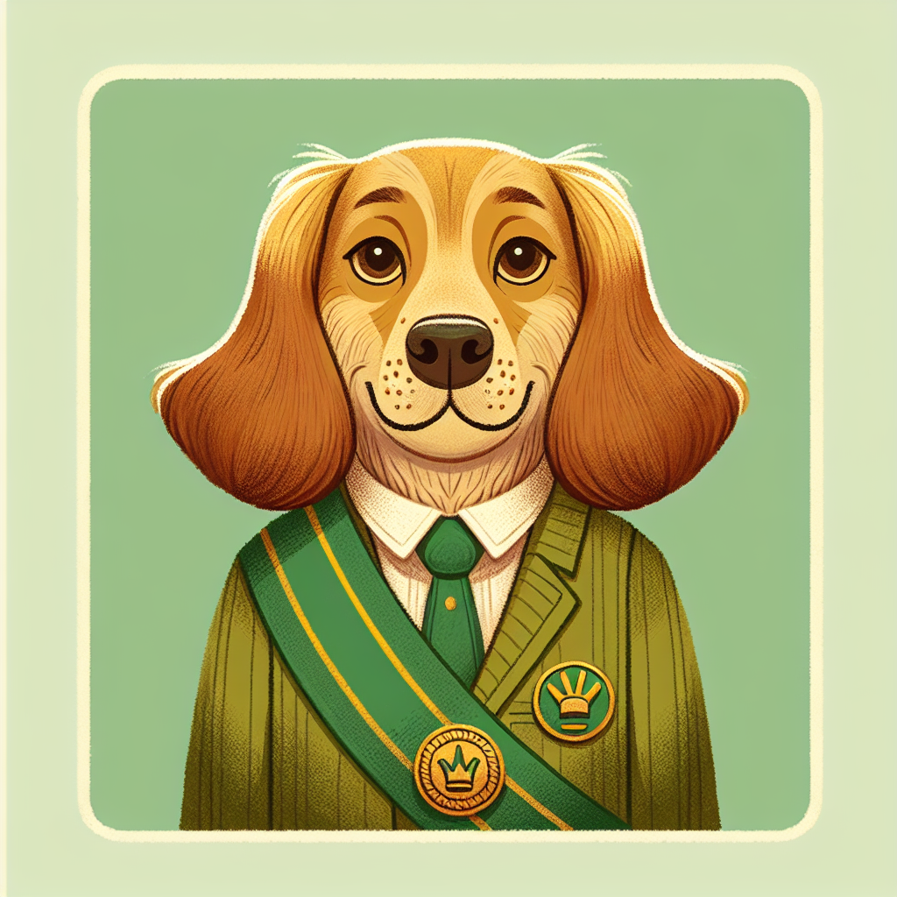
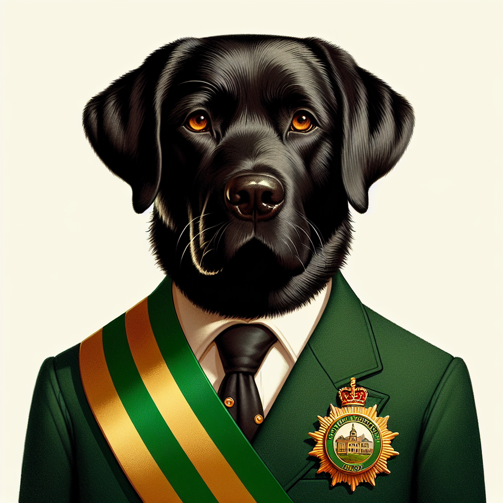
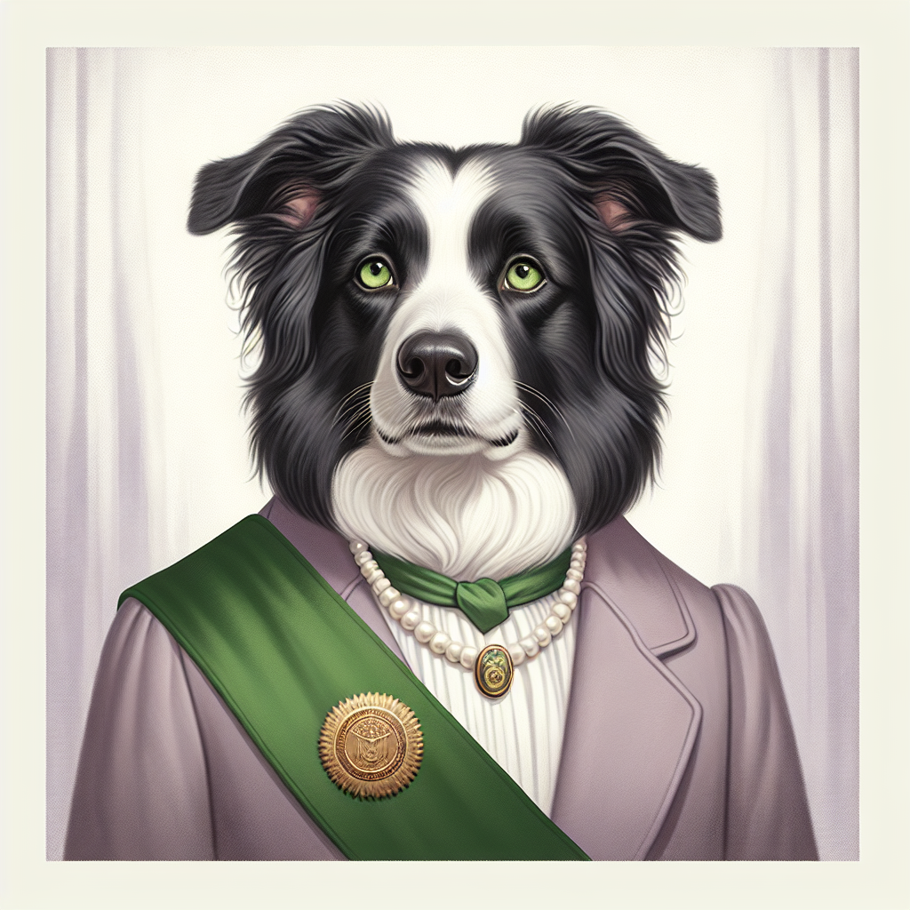
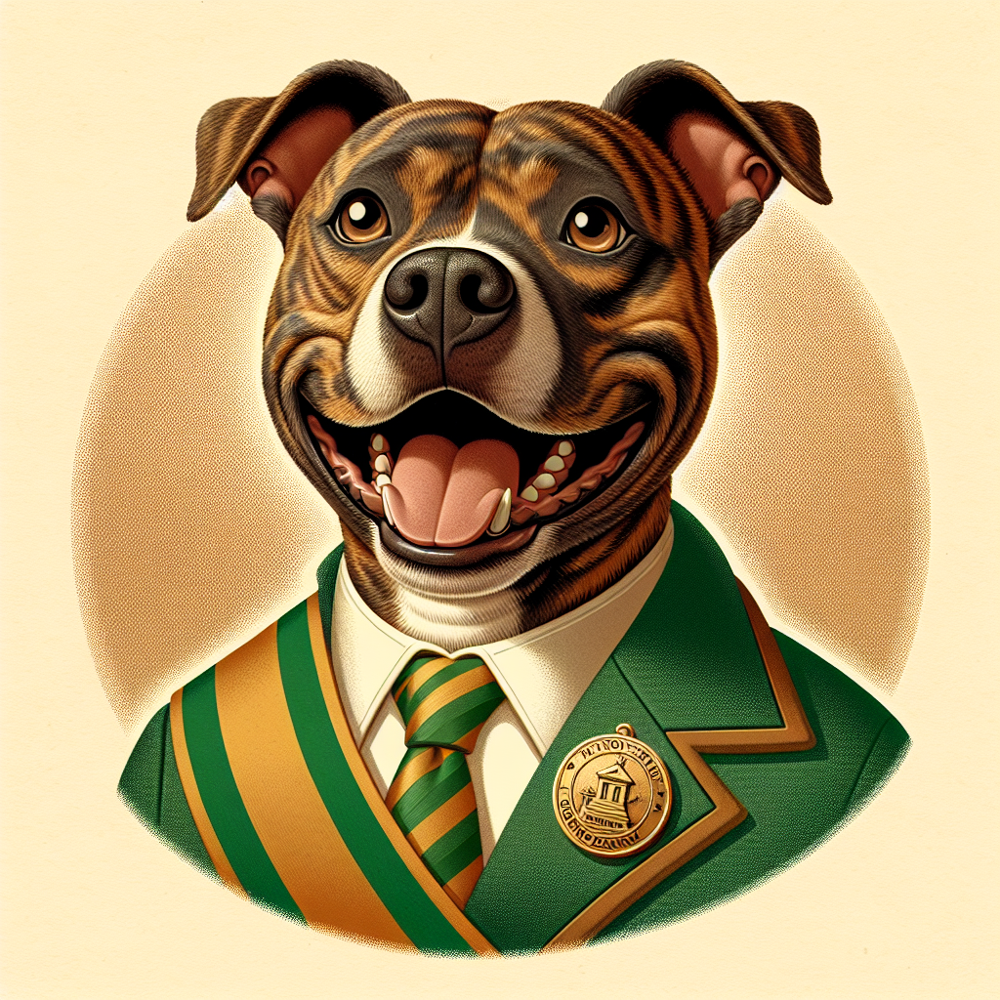
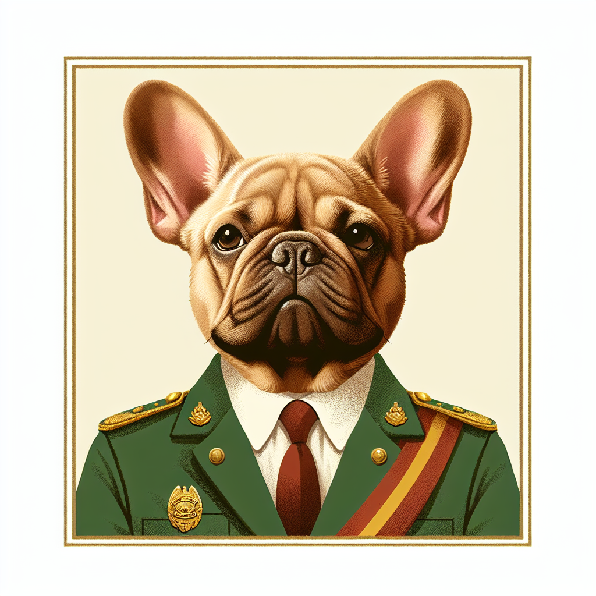

Since 1998
Six mayors. All dogs. Zero scandals. Rabbit Hash has been doing democracy right for over 25 years.
It started as a fundraiser and became a legend. In 1998, the residents of Rabbit Hash decided that if any town was going to elect a dog as mayor, it might as well be theirs. Votes cost one dollar each — anyone, anywhere can buy as many as they want — and the proceeds go to the Rabbit Hash Historical Society.
What began as a charming local quirk attracted national press, documentary filmmakers, and eventually international attention. The mayors have appeared on CBS Sunday Morning, Reader's Digest, and made enough noise that one of them briefly considered a presidential run.
These are their stories.

Mixed breed · "Dog of unknown parentage"
The original. Goofy won the first-ever Rabbit Hash mayoral election in 1998 and was inaugurated to great local fanfare. His unlikely rise to power was chronicled in the documentary Rabbit Hash: The Center of the Universe. Goofy served faithfully until his death in July 2001 at the age of 16 — still in office, tail wagging to the end.

Black Labrador Retriever
Junior won the 2004 election after the mayoralty sat vacant for several years. His tenure was not without controversy: the Northern Kentucky Health Department banned him from entering the General Store after a visitor complained about animals inside — a ruling that enraged his loyal constituents. A petition was filed on his behalf. Junior died in office in May 2008, age 15, unbowed.

Border Collie · First female mayor
Lucy Lou was elected in a special August 2008 election to fill the vacancy left by Junior's passing, becoming Rabbit Hash's first female mayor. She was the town's most celebrated mayor — walking with CBS Sunday Morning's Bill Geist, accepting a $1,000 stimulus check from Reader's Digest, serving as Grand Marshall of Covington's Paw-Rade, and winning Best Elected Official in Cincinnati CityBeat three years running.
In 2015 she briefly announced a U.S. presidential exploratory campaign. Lucy Lou was also the first Rabbit Hash mayor not to die in office; she retired with her dignity intact. She passed away on September 10, 2018, at age 12, beloved by the whole country.

Pit Bull · Most votes in Rabbit Hash history (at the time)
Brynn stormed the 2016 election, pulling massive vote totals and becoming an international sensation. Her election was covered by outlets across the globe — a pit bull winning an election in the same week as a deeply divisive national election felt like exactly the kind of wholesome news everyone needed. She served a full term with characteristic good humor and zero scandals.

French Bulldog · Current Mayor
Wilbur Beast, a French Bulldog, won the 2020 election with a staggering 13,143 votes, raising over $13,000 for the Rabbit Hash Historical Society. He currently serves as mayor and is, by all accounts, doing an excellent job. His approval rating among constituents who can reach treats from the counter hovers near 100%.
Elections happen every four years. Votes cost $1 each — there's no limit on how many you can buy — and all proceeds go to the Rabbit Hash Historical Society to fund preservation of this National Historic Place.
Anyone can vote. From anywhere. You don't have to be a resident of Rabbit Hash (you might outnumber them if you tried). The next election date will be announced by the Historical Society. Until then, the incumbent serves.
Visit the Rabbit Hash Historical Society →Show your support for canine democracy — and your pup — with some great finds on Amazon.